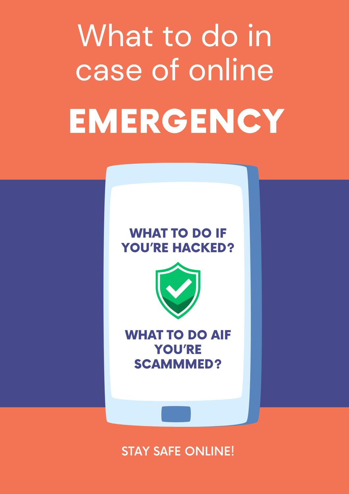
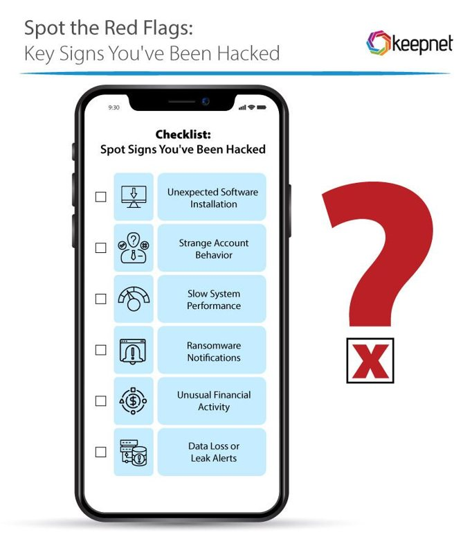
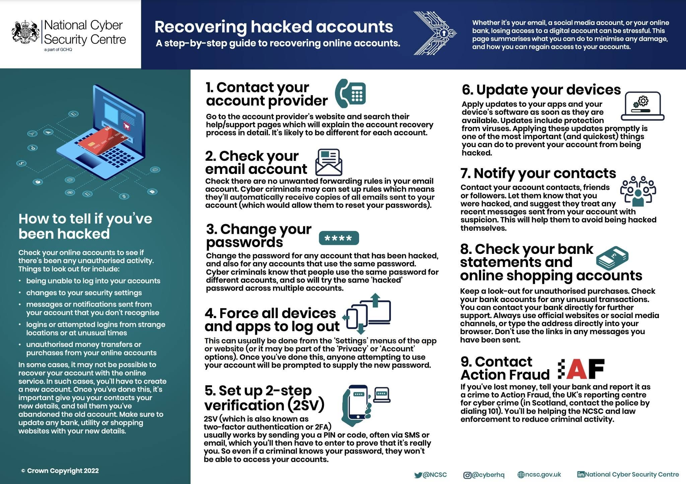

Emergency · Lesson 12 of 12
What to do in an emergency
If you’ve been hacked or scammed
Act fast. Stay calm. Stay safe online.


Part 1
What to do ifyou’ve been hacked.
Imagine you wake up one morning and discover that you cannot log in to your email account. Someone has changed your password and is sending strange messages to your friends. Your account has been hacked!
Hacking happens when someone gains unauthorised access to your account. Acting quickly helps protect your personal information, prevent further damage and secure your account.
- 1
Cut off the attacker (immediate action)
- Disconnect from the internet: Turn off Wi-Fi, unplug your Ethernet cable, or turn on airplane mode on your device to stop the hacker from doing more damage.
- End active sessions: If you are using a clean device, log in to your compromised account and force-logout all unknown devices or active remote sessions.
- 2
Secure your main email first
- Reclaim your email: Your email is the master key to resetting your other accounts. Secure it first using a trusted, uninfected device.
- Check for hidden traps: Look inside your email settings for unauthorized forwarding rules, hidden filters, or recovery email changes the hacker might have set up to intercept your reset codes.
- 3
Change your passwords and enable MFA
- Change critical passwords: Update passwords for your email, bank accounts, and primary login accounts. Use strong, unique passwords for every single service.
- Turn on multi-factor authentication (MFA): Add an authenticator app (like Google Authenticator or Authy) or a security key rather than relying only on SMS text codes.
- 4
Scan and clean your devices
- Run a security scan: Use an updated anti-malware or antivirus program to scan your computer, phone, or tablet for Trojans, spyware, or keyloggers.
- Update your software: Install the latest updates for your operating system, web browser, and apps to patch security holes.
- 5
Check accounts and money
- Review financial statements: Check your bank accounts, credit cards, and online shopping profiles (like Amazon or PayPal) for unauthorized purchases or fund transfers.
- Warn your contacts: Let friends, family, or coworkers know if your social media or email sent out strange spam links or messages.
- 6
Report the incident
- Contact your bank: If money or financial details were stolen, freeze your cards immediately and report the fraud to your bank.
- File official reports: Report identity theft or cybercrimes to local authorities or national agencies (such as the Federal Trade Commission at IdentityTheft.gov in the U.S. or equivalent local cyber-police units).




Part 2
What to do ifyou’ve been scammed.
Imagine you see an online shop selling your favourite shoes at a very low price. You order them and pay online, but the shoes never arrive. The seller stops replying, and you realise you’ve been scammed!
An online scam happens when someone tricks you into giving away money or personal information. Acting quickly can help limit your losses and protect you from further fraud.
- 1
Stop all contact
- Cut off communication: Immediately stop talking, chatting, or emailing the scammer.
- Block details: Block their phone numbers, email addresses, and social media profiles. Do not reply to threats or secondary “recovery” offers (which are often follow-up scams).
- 2
Secure your money and accounts
- Contact your bank: Call your bank or card provider straight away (using the phone number on the back of your card, not from a suspicious message) to freeze accounts, block cards, or stop pending transactions.
- Change passwords: Update passwords and PINs for your online banking, email, and primary accounts, especially if you shared them or used a phishing link.
- Enable alerts: Turn on multi-factor authentication (MFA) and fraud alerts on your accounts.
- 3
Document and preserve evidence
- Take screenshots: Capture full text messages, direct messages, emails, chat logs, and user profiles before they can be deleted.
- Save transaction records: Download receipts, bank transfer details, crypto wallet addresses/hashes, and invoice copies.
- Write a timeline: Jot down the date contact began, what was promised, what data you shared, and when you noticed the fraud.
- 4
Report the scam to authorities
- Local police: File a report with your local police department and request a copy of the report or a reference number.
- National fraud centers: Report the incident to your country’s cybercrime or fraud reporting agency (such as Action Fraud in the UK, the FBI IC3 or FTC in the US, or Scamwatch in Australia).
- Credit bureaus: Notify major credit reporting agencies if your identity or Social Security / National Insurance number was compromised.
Content created by participants during the training course in Poronin, October 2026.
Game time
Two truths,one lie.
Round 1: you’ve been hacked. Round 2: you’ve been scammed. In each round, two statements are true. Find the lie!
The lie is C.
The lie is C.